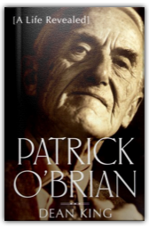
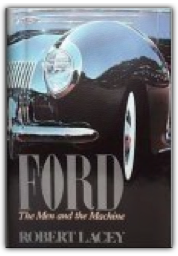
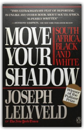
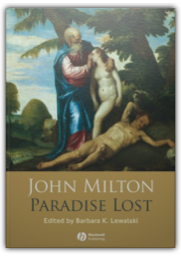
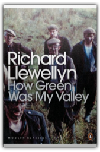
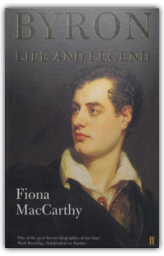
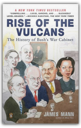
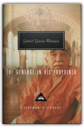
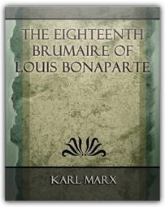

|

Patrick O'Brian : A Life Revealed
Dean King

The untold life story of a novelist whose greatest fictional creation was his own identity.

FORD The Men and the Machine
Robert Lacey
Master biographer Robert Lacey tells the fascinating, authoritative account of the ambitious men and glamorous women behind the world's largest family-controlled business empire. From Henry Ford — the original in every sense of the word — whose revolutionary standards created a new way of life for America and the world, to Henry Ford II, old Henry's grandson, who rose from a frivolous playboy to become an industrial giant in his own right, to the tragic figure of Edsel Ford, old Henry's son and young Henry's father, smothered by the one and overshadowed by the other, to brash Lee Iacocca, whose visionary plans for the company would put him in conflict with Henry Ford II.

Move Your Shadow: South Africa, Black and White
Joseph Lelyveld
The complexities of South Africa are illuminated upon in this acclaimed work that takes a close, clear look at the strange realities within that country.

Paradise Lost
Barbara K. Lewalski, John Milton
In this authoritative edition of John Milton’s epic poem, Paradise Lost is presented in the original language of its 1674 publication, with explanatory annotations and word glosses.

How Green Was My Valley
Richard Llewellyn
Growing up in a mining community in rural South Wales, Huw Morgan is taught many harsh lessons. Looking back, where difficult days are faced with courage and the valleys swell with the sound of Welsh voices, it becomes clear that there is nowhere so green as the landscape of his own memory.

Byron: Life and Legend
Fiona MacCarthy
This biography reinterprets the great man's life and poetry. MacCarthy casts a fresh eye on Byron's childhood in Scotland, his embattled relations with his mother and his series of relationships with adolescent boys.

Rise of the Vulcans: The History of Bush's War Cabinet
James Mann
When George W. Bush campaigned for the White House, he was such a novice in foreign policy that he couldn’t name the president of Pakistan. But he was advised by a group that called themselves the Vulcans—a group of men and one woman with long and shared experience in government, dating back to the Nixon, Ford, Reagan, and first Bush administrations. After returning to power in 2001, the Vulcans—including Dick Cheney, Donald Rumsfeld, Colin Powell, Paul Wolfowitz, Richard Armitage, and Condoleeza Rice—were widely expected to restore U.S. foreign policy to what it had been in past Republican administrations. Instead, they put America on an entirely new course, adopting a far-reaching set of ideas and policies that changed the world and America’s role in it.

The General in His Labyrinth
Gabriel Garcia Marquez
(Book Jacket Status: Jacketed)

The Eighteenth Brumaire of Louis Bonaparte - 1913
Karl Marx
The Eighteenth Brumaire of Louis Bonaparte is one of Karl Marx most profound and most brilliant monographs. It may be considered the best work extant on the philosophy of history, with an eye especially upon the Ins-tory of the Movement of the Proletariat, together with the bourgeois and other manifestations that accompany the same, and the tactics that such conditions dictate...
The Communist Manifesto
Karl Marx, Friedrich Engels
All that is solid melts into air, all that is holy is profaned …Working men of all countries, Unite! This book truly changed the world, inspiring millions to revolution. Over 150 years after its publication, Marx and Engels' Communist Manifesto continues to inspire and provoke students, activists and citizens. The principles embodied within in it lie at the heart of thousands of academic and literary works. It is the starting point for people who refuse to accept that capitalism represents the final and optimum stage of human development. After reading this book, it is impossible to remain convinced that there is no alternative to unrestrained neoliberalism. In an introductory call to arms, renowned social theorist David Harvey asks us to look upon the Manifesto not as a historical document, but an invaluable tool for change.
The Child in Time
Ian McEwan
Stephen Lewis, a successful writer of children's books, is confronted with the unthinkable: his only child, three-year-old Kate, is snatched from him in a supermarket. In one horrifying moment that replays itself over the years that follow, Stephen realizes his daughter is gone. |
 Made with Delicious Library
Made with Delicious Library
Springfield, VA zipflap congrotus delicious library Fogus, Michael